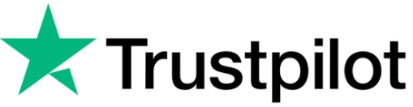
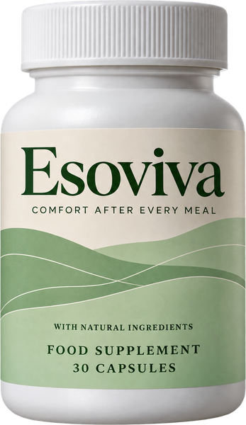

2 milióny zobrazení na Facebooku
Ten pretrvávajúci kašeľ, chrapot a hrča v hrdle nie sú alergie. Je to porucha, ktorú väčšina lekárov prehliadne
Laryngofaryngeálny reflux (LPR) nie je to isté ako pálenie záhy. Preto vám nič z toho, čo ste doteraz vyskúšali, v skutočnosti nepomohlo.
Už celé mesiace si odkašliavate. Možno dokonca roky. Okolo obeda sa vám hlas mení na chrapľavý. V hrdle máte hrču, ktorá nezmizne, nech prehĺtate, ako chcete. Trápi vás suchý kašeľ, pre ktorý nikto nemá vysvetlenie: ani váš praktický lekár, ani alergológ, ani ORL špecialista.
Vyskúšali ste lieky na alergiu. Inhalátory. Nosné spreje. Antibiotiká. Nič z toho naozaj nepomáha.
Toto vám takmer nikto nepovedal: možno nejde len o alergiu alebo astmu. Vaše hrdlo môže poškodzovať žalúdočná kyselina, aj keď ste možno nikdy netrpeli pálením záhy.
Tento stav sa nazýva laryngofaryngeálny reflux (LPR), tiež známy ako tichý reflux. Postihuje odhadom až 10 % populácie, spôsobuje približne 50 % všetkých prípadov chronického chrapotu a patrí k najčastejšie prehliadaným diagnózam v medicíne [1].
Posielali vás už od špecialistu k špecialistovi bez odpovedí? Tento článok vysvetľuje presne to, čo sa deje vo vašom tele a čo s tým môže urobiť Esoviva™.
LPR a GERD NIE SÚ to isté ochorenie
To najdôležitejšie, čo si dnes prečítate: GERD a LPR poškodzujú iné miesta, majú iné príčiny a vyžadujú si odlišný prístup [2].
Pri GERD sa žalúdočná kyselina vracia do dolnej časti pažeráka. Pažerák je stavaný na to, aby to čiastočne zvládol, a má prirodzené ochranné mechanizmy, ktoré si poradia až s 50 refluxnými epizódami denne.
Pri LPR stúpa reflux oveľa vyššie, za horný pažerákový zvierač, smerom k hrtanu, hrdlu a dýchacím cestám. Váš hrtan žiadny z týchto ochranných mechanizmov nemá. Výskumy ukazujú, že už 3 refluxné epizódy môžu stačiť na poškodenie hrtana [3].
Preto platí:
80 % ľudí s GERD trpí pálením záhy, ale pri LPR je to len 20 % [4]
87 % ľudí s LPR si neustále odkašliava, v porovnaní s menej ako 5 % ľudí s GERD
gastroenterológ môže povedať, že pažerák „vyzerá dobre“, pretože poškodenie je vyššie, než kam sa pozerá
PPI pri LPR často nefungujú tak ako pri GERD, pretože problém nespôsobuje len kyselina
Ak sa vaše ťažkosti nezlepšujú, opýtajte sa lekára aj na LPR. Vaše ochorenie sa jednoducho neprejaví tam, kde je viditeľný GERD.
Problém pepsínu: prečo samotné lieky na kyselinu laryngofaryngeálny reflux nevyriešia
Toto je biologická príčina, ktorá mení všetko:
Najväčším vinníkom poškodenia pri LPR nie je samotná žalúdočná kyselina, ale enzým nazývaný pepsín. Pepsín vzniká v žalúdku, aby štiepil bielkoviny. Keď sa refluxom dostane do hrdla, vstrebe sa do tkaniva hrtana a zostáva tam [5].
Aj potom, čo reflux odznie. Aj keď už tam nie je žiadna kyselina. Pepsín zostáva v bunkách pri neutrálnom pH, spiaci, ale stabilný. Hneď ako sa do hrdla znova dostane kyselina – napríklad pri jedle, pití alebo miernom refluxe –, spiaci pepsín sa opäť aktivuje a pokračuje v poškodzovaní tkaniva zvnútra [6].
Preto samotné lieky na kyselinu (PPI) pri LPR často nestačia:
PPI znižujú tvorbu kyseliny, ale pepsín môže poškodzovať aj pri nekyslom refluxe
PPI neodstránia pepsín, ktorý sa už vstrebal do tkaniva hrtana
PPI pôsobia v žalúdku, ale netvoria ochrannú vrstvu na hrdle ani na hornej časti pažeráka
Pri LPR je často potrebná najmenej 6-mesačná liečba, v porovnaní s približne 8 týždňami pri bežnom GERD [7]
Ako to opísala jedna štúdia: ľudia s LPR navštívia v priemere 10 rôznych špecialistov a podstúpia 6 vyšetrení už počas prvého roka, často bez jasných odpovedí [8].
Máte LPR? Test príznakov, ktorý by lekári mali používať
Index príznakov refluxu (RSI) je overený nástroj, ktorým lekári zisťujú LPR. Ak dosiahnete viac ako 13 bodov, je pravdepodobnosť LPR vysoká [9]. Ohodnoťte každý príznak od 0 do 5 (od žiadnych ťažkostí po vážne ťažkosti):
Chrapot alebo problémy s hlasom – hlas sa okolo obeda unaví, preskakuje alebo znie drsne
Neustále odkašliavanie – trvalé nutkanie, horšie po jedle, akoby v hrdle viazol hlien, ktorý sa nedá odstrániť
Nadbytok hlienu v hrdle / zatekanie hlienov – hustý, lepkavý hlien, na ktorý lieky na alergiu nezaberajú
Problémy s prehĺtaním – tabletky akoby škriabali, jedlo sa zadrháva, hrdlo je stiahnuté
Kašeľ po jedle alebo v ľahu – suchý, úporný kašeľ, na ktorý inhalátory nezaberajú
Dýchavičnosť alebo dusenie – pocit, že musíte lapať po dychu alebo že sa vám zužujú dýchacie cesty
Obťažujúci, pretrvávajúci kašeľ – ten, pre ktorý nikto nemá vysvetlenie
Hrča v hrdle (globus pharyngeus) – je tam stále a nedá sa prehltnúť
Pálenie záhy, bolesť na hrudníku alebo tráviace ťažkosti – vyskytuje sa len u 20 – 35 % ľudí s LPR
Spozorovali ste u seba 3 alebo viac z týchto ťažkostí a pálenie záhy nie je vaším hlavným príznakom? Potom je veľká šanca, že ide o laryngofaryngeálny reflux (LPR).
Prečo je vaše hrdlo 100x zraniteľnejšie ako pažerák
Váš pažerák má zabudované ochranné mechanizmy: enzýmy karboanhydrázy, ktoré neutralizujú kyselinu, silnú viacvrstvovú ochrannú vrstvu a rýchle svalové pohyby, ktoré vracajúci sa obsah odvedú späť.
Váš hrtan nemá žiadny z týchto ochranných mechanizmov.
Je vystlaný krehkým riasinkovým epitelom – rovnakým typom tkaniva, aký vystiela dýchacie cesty. Keď sa k tomuto tkanivu dostane pepsín, rozkladá ochranné bielkoviny (karboanhydrázu III a E-kadherín), ktoré udržiavajú prirodzenú bariéru [10]. Dôsledok:
Ochranná vrstva tkaniva sa poškodí → vstrebe sa viac pepsínu
Spustia sa zápalové reakcie → opuch, začervenanie a viac hlienu
Tkanivo hlasiviek zhrubne → chrapot a rýchlo unavený hlas
Receptory kašľa sa stanú citlivejšími → chronický kašeľ, ktorý nereaguje na bežnú liečbu
Hrča v hrdle silnie → ten nepríjemný pocit, ktorý nemizne
Preto váš ORL lekár vidí zápal, ale nie infekciu. Preto lieky na alergiu nepomáhajú. Poškodenie je chemického charakteru, nie je následkom vírusu ani alergie.

Prečo pri laryngofaryngeálnom refluxe robí receptúra v kapsulách rozdiel
Pri LPR rozhoduje aj to, či dokážete zložky užívať pravidelne, deň čo deň. Práve pri dlhodobej rutine sa mnohé riešenia ťažko dodržiavajú.
Esoviva™ je preto vyvinutý inak. Je to receptúra v kapsulách, ktorú užívate jednoducho každý deň, doma aj na cestách, bez odmerania a prípravy, so starostlivo vybranými rastlinnými zložkami.
Pri LPR je to dôležité, pretože:
Koreň ibiša a brest červený obsahujú prirodzené hlienové látky
Alginát sodný tvorí ochrannú vrstvu na povrchu žalúdočného obsahu. Výskumy ukazujú, že algináty tlmia aj pepsín a žlčové soli, takže riešia nielen kyslú, ale aj nekyslú zložku LPR [12]
Kyselina hyalurónová je zložka, ktorá sa prirodzene nachádza v tkanivách
Zinok-L-karnozín sa viaže na poškodené tkanivo a podporuje jeho prirodzenú integritu pri oxidačnom strese
Na forme záleží. Pri ťažkostiach, ktoré si vyžadujú dlhodobú rutinu, potrebujete receptúru, ktorú budete skutočne užívať každý deň.
Algináty tlmia pepsín
Výskumy ukazujú, že algináty tlmia pepsín aj žlčové soli, nielen žalúdočnú kyselinu [12]
Až o 60 % menej poškodenia tkaniva
Zinok-L-karnozín znižoval závažné poškodenie pažeráka pri oxidačnom strese [14]
9 z 10 ľudí cíti úľavu do 10 minút
Koreň ibiša s prirodzenými hlienovými látkami prinášal používateľom rýchlu úľavu [13]
O 53 % vyšší komfort
Kyselina hyalurónová + chondroitín sulfát zlepšili komfort popri štandardnej liečbe [15]
Algináty tlmia pepsín
Výskumy ukazujú, že algináty tlmia pepsín aj žlčové soli, nielen žalúdočnú kyselinu [12]
Až o 60 % menšie poškodenie tkaniva
Zinok-L-karnozín znižoval závažné poškodenie pažeráka pri oxidačnom strese [14]
9 z 10 ľudí cíti úľavu do 10 minút
Koreň ibiša lekárskeho s prirodzenými slizovými látkami prinášal používateľom rýchlu úľavu [13]
O 53 % vyšší komfort
Kyselina hyalurónová + chondroitín sulfát zlepšili komfort popri štandardnej liečbe [15]
Výsledky vychádzajú z publikovaných štúdií jednotlivých zložiek. Dávkovanie a zloženie sa môžu líšiť. Výsledky sú individuálne. Produkt nie je určený na diagnostiku, liečbu, vyliečenie ani prevenciu akýchkoľvek chorôb.
90-dňový plán obnovy pri laryngofaryngeálnom refluxe
LPR sa hojí pomalšie ako GERD. Výskumy odporúčajú liečbu trvajúcu najmenej 3 až 6 mesiacov [7]. Esoviva™ bol vyvinutý ako štruktúrovaný 90-dňový protokol:
1. – 3. týždeň: Fáza ochrany
Začínate s pravidelným užívaním: koreň ibiša, brest červený a alginát sa stávajú súčasťou vašej každodennej rutiny. Používatelia často spozorujú, že si musia menej odkašliavať, ľahšie prehĺtajú a hrča v hrdle postupne slabne.
4. – 6. týždeň: Fáza regenerácie
Kyselina hyalurónová, chondroitín sulfát a glutamín podporujú obnovu tkaniva poškodeného pepsínom. Hlas sa unaví pomalšie. Kašeľ ustupuje. Mnoho používateľov znovu získa dôveru vo svoj hlas.
7. – 9. týždeň: Fáza posilnenia
Aloe vera, DGL sladké drievko a kvercetín podporujú prirodzenú odolnosť sliznice a zdravú zápalovú reakciu. Problémy v hrdle sa stabilizujú. Trvalý pocit hlienu v zadnej časti hrdla ustupuje.
10. – 12. týždeň: Fáza obnovy
Vaše hrdlo funguje na novej úrovni. Hlas zostáva silný celý deň. Kašeľ z veľkej časti zmizol. Hrča v hrdle je preč. Pre mnohých používateľov je to chvíľa, kedy si uvedomia, že „alergia“, s ktorou roky žili, nikdy alergiou nebola.
S podporou našej 60-dňovej záruky vrátenia peňazí. Necítite jasný rozdiel? Vrátime vám celú kúpnu cenu.
Otázky, ktoré si ľudia s LPR kladú, než Esoviva™ vyskúšajú
„Nemám pálenie záhy. Má to vôbec zmysel?“
Väčšina ľudí s LPR pálenie záhy nemá. Esoviva™ je preto určený aj pre ľudí, ktorých ťažkosti sa neprejavujú pálením záhy.
„Môj ORL lekár mi predpísal PPI. Môžem užívať oboje?“
Opýtajte sa svojho lekára. Esoviva™ bol vyvinutý ako doplnok k PPI, nie ako ich náhrada. PPI znižujú tvorbu kyseliny. Esoviva™ podporuje vašu každodennú rutinu. Každý pôsobí na inú časť toho istého problému.
„Za ako dlho pocítim rozdiel?“
Hojenie pri LPR je pomalšie ako pri GERD. Klinické odporúčania uvádzajú 3 až 6 mesiacov užívania. Mnoho používateľov zaznamená prvé zlepšenie medzi 2. a 4. týždňom, hlasové problémy a kašeľ potom zvyčajne ďalej ustupujú medzi 4. a 6. týždňom.
„Je to dosť drahé.“
Pri 90-dňovej kúre (balíček 2+1) vyjde Esoviva™ asi na 0,87 € denne. Ľudia s LPR často minú veľké sumy za špecialistov a vyšetrenia bez trvalého zlepšenia. Vďaka 60-dňovej záruke vrátenia peňazí nepodstupujete žiadne riziko.
Receptúru zostavili lekári z 11 vedecky skúmaných zložiek
Receptúra v kapsulách na jednoduché každodenné užívanie
Alginát + koreň ibiša pomáhajú priamo tlmiť pepsín
Platba na dobierku – platíte až pri prevzatí
60-dňová záruka vrátenia peňazí
Povedali vám, že sú to alergie. Že vám zatekajú hlieny. Vyskúšali ste takmer každý sprej aj inhalátor. Vaše hrdlo napriek tomu zostáva podráždené, hlas slabne a hrča v hrdle nikdy nezmizne.
Je čas riešiť to, čo sa deje naozaj: poškodenie tkaniva hrdla žalúdočnou kyselinou a pepsínom na mieste, ktoré to neznesie. Vyskúšajte Esoviva™ teraz, 100 % bez rizika a so zľavou 50 %. Platíte až pri prevzatí, na dobierku.
Odporúčané:


Esoviva™
Menej problémov s hrdlom do 3 týždňov
Receptúra v kapsulách
Alginát + koreň ibiša tlmia pepsín
Opäť pohodlne prehĺtajte a rozprávajte
60-dňová záruka vrátenia peňazí

Ochrana osobných údajov
Podmienky používania
Vrátenie tovaru a peňazí
Kontakt: support@livigoods.com
Esoviva™ © 2026